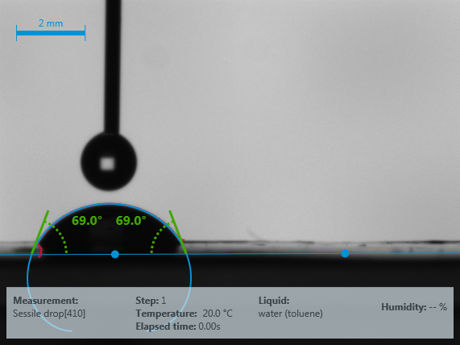
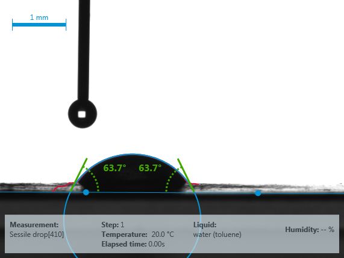
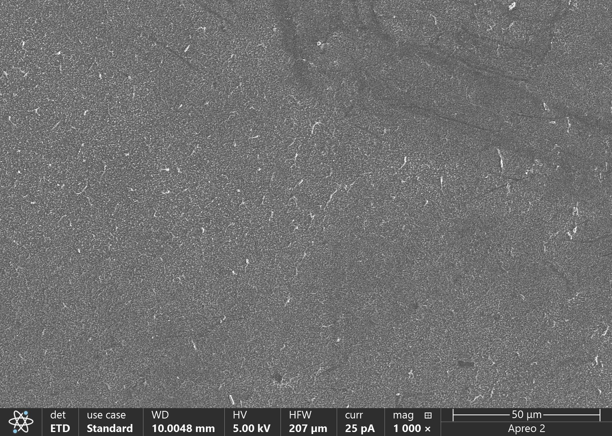
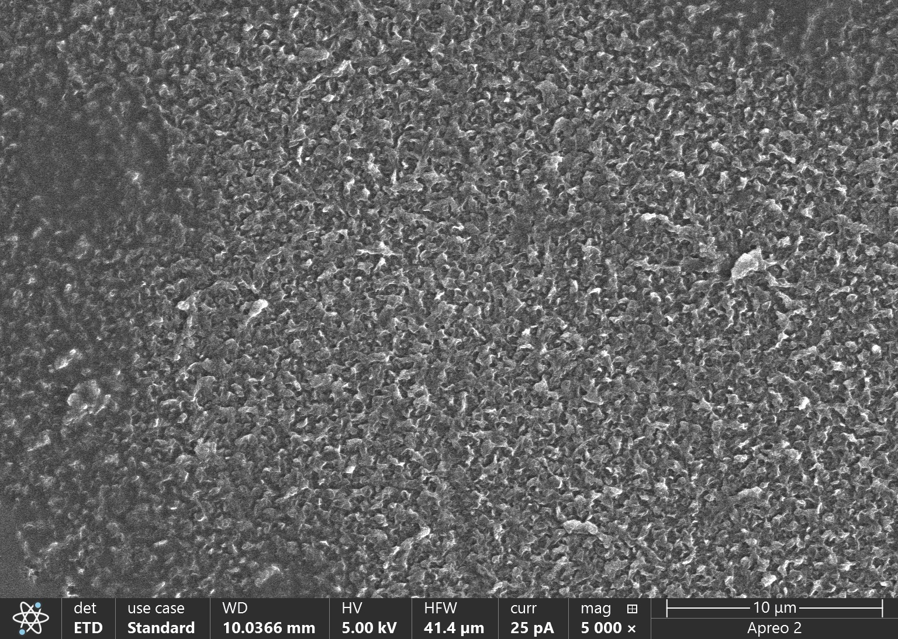
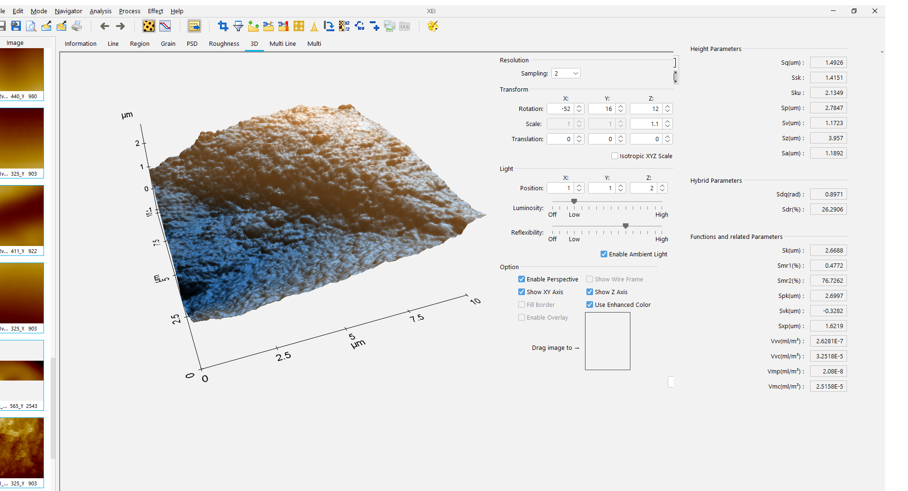

Coating chemistry aimed at reducing fouling on reverse osmosis membranes, so a triplicate RO system can hold low operating pressure and stay energy efficient over time.
Freire-Gormaly Lab, York University · Researcher · April 2024 to August 2025
Fouling on reverse osmosis membranes raises the pressure needed to push water through them, which raises the energy cost of the whole filtration system. A surface coating that resists fouling keeps that operating pressure low for longer, which is the point of running the system in triplicate at low, steady pressure rather than letting it climb.
I worked on the coating chemistry itself, formulation and application, and on characterising what the coating actually did to the membrane surface. This sits alongside the electrospun chitosan:PVA air-filtration membrane work in the same lab, sharing fabrication infrastructure but aimed at a different membrane application.
Wettability, morphology and roughness, coupon by coupon
A coating aimed at reducing fouling has to change how the membrane surface behaves, not just how it looks. Contact angle sets how readily water wets the surface, SEM shows whether the coating covers evenly, and AFM quantifies the roughness that fouling tends to collect on.





Sample codes as recorded in the lab notebook; a legend tying each code to its exact formulation, and the paired FTIR spectra and RO pressure-tracking data, to be added.